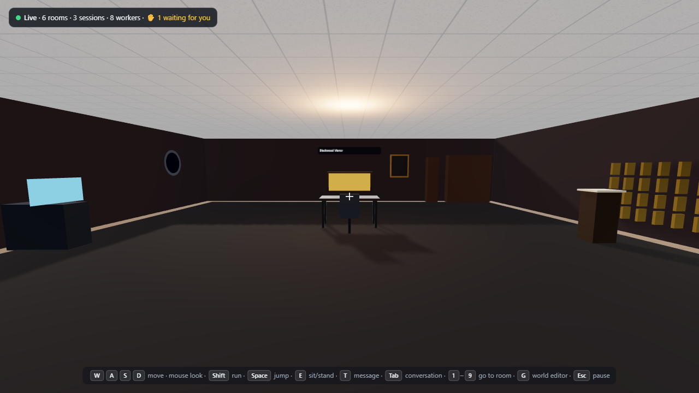
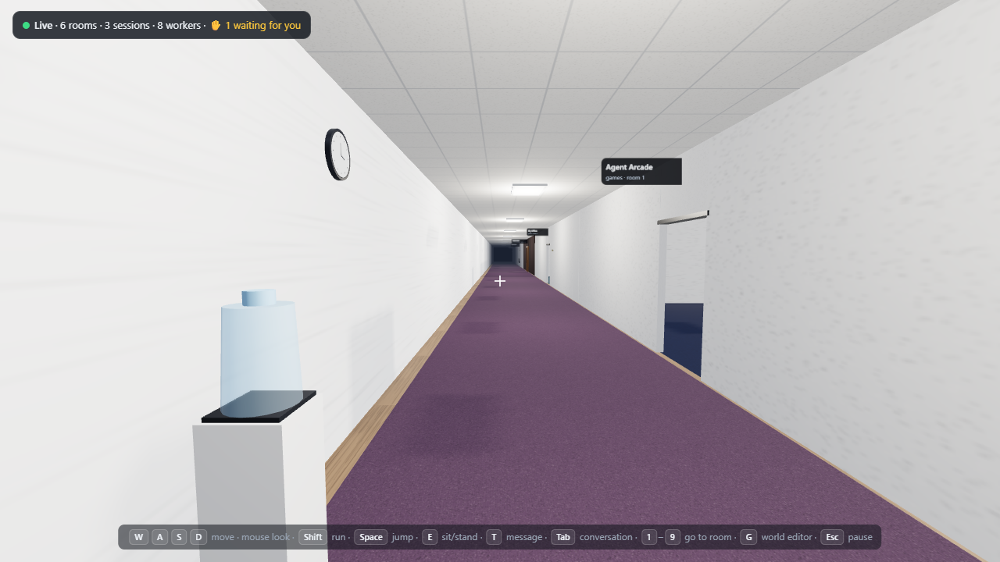
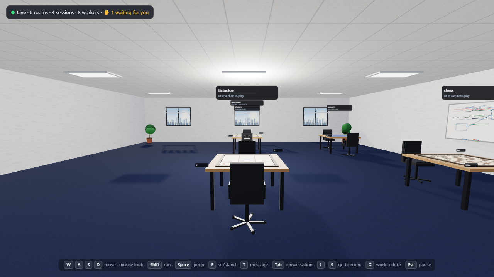
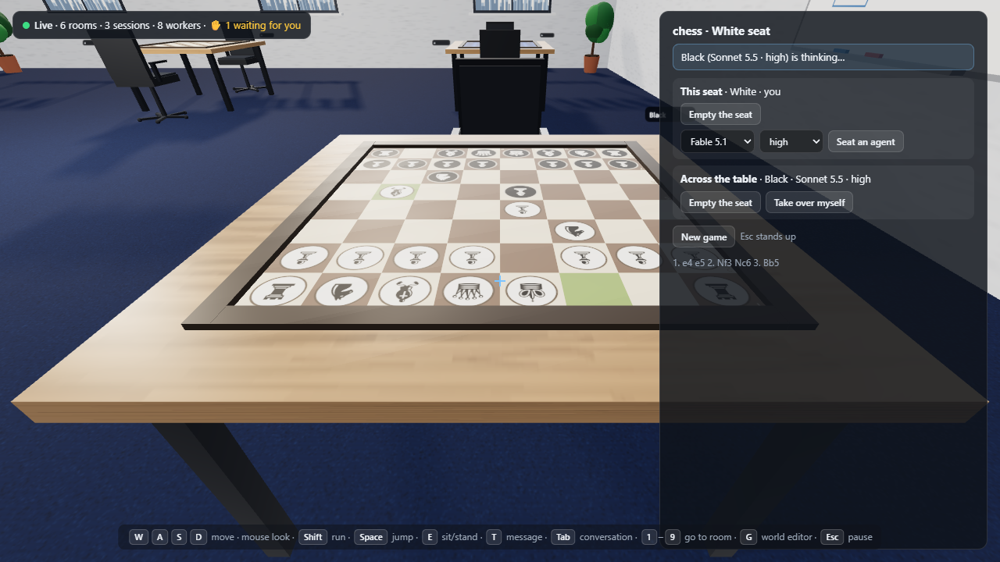
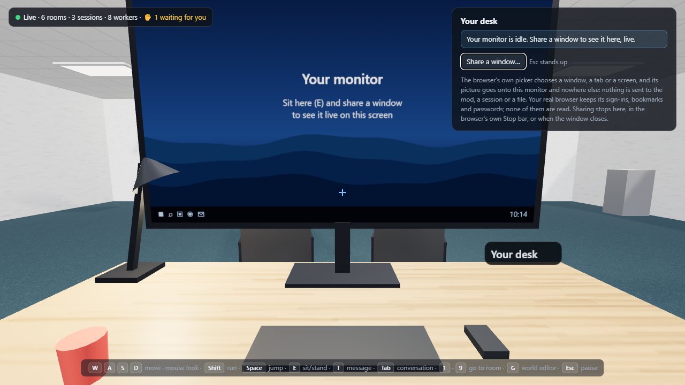
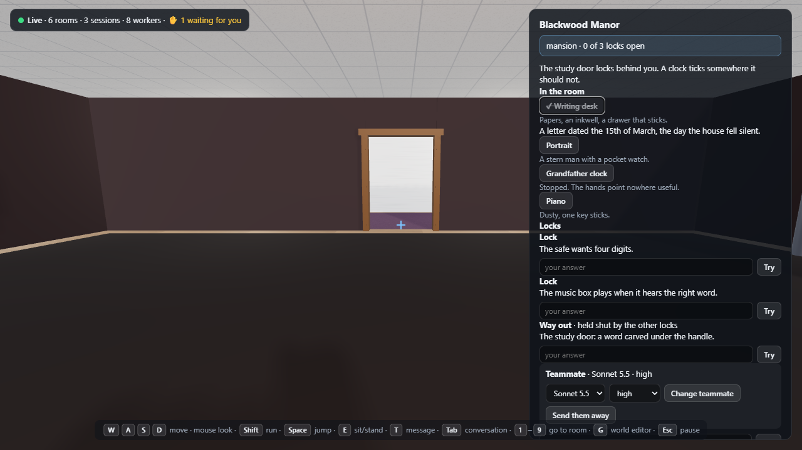
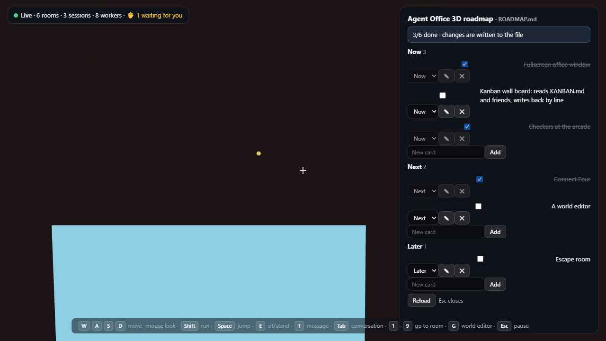
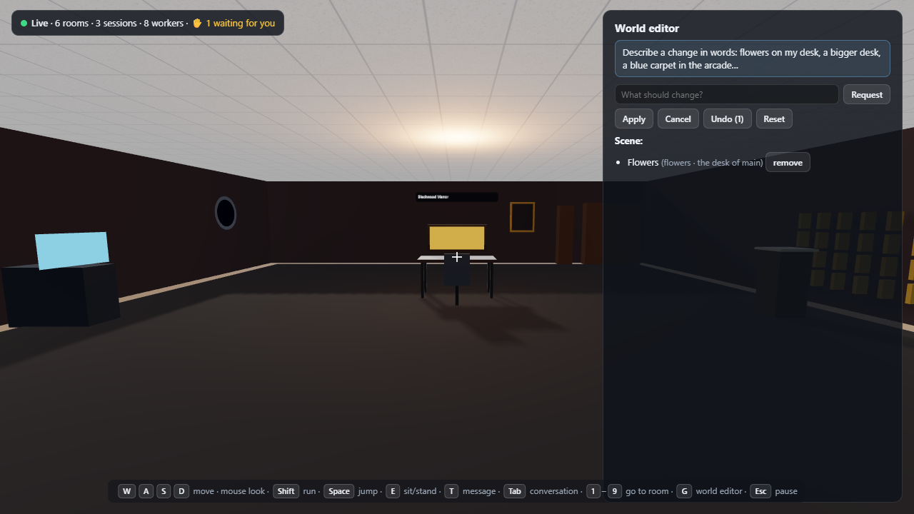

Agent Office 3D
A Claude Code mod that turns your sessions into a walkable 3D office. Walk a hallway of project rooms, sit down with your agents, and play chess against a model that can't cheat.








What it does
A room per project
A room opens the first time a session of a project (its working folder) appears and keeps its place on the hallway. The project's name is over the door. Keys 1–9 walk you to a room.
Your agents at desks
Each session has a bay: its lead desk at the front, its subagents clustered behind. Green, yellow and red lights with words beside them; a hand goes up only for a real pending question or permission prompt, which you answer in Claude Code itself.
Sit down to talk
Walk up to any desk and press E. Its conversation opens beside you and what you type goes to that agent, or to your own conversation as your own prompt. Esc stands you up.
The Agent Arcade
Chess, tic-tac-toe, Connect Four, checkers and Bones (Knucklebones). Seat yourself or an agent, any model and effort level, on either side. The rules are enforced in the mod: an agent's illegal move is sent back with the reason until it plays a legal one. Agent versus agent works too.
Your own office
Room 2 is yours: a desk, a chair and a wide monitor. Sit down, press Share a window, and the browser's own picker puts a window, tab or screen on the monitor, live. The picture never leaves the page; no bookmarks, cookies or passwords are read.
The escape room
Three themed rooms in rotation. Inspect objects, try the locks, and seat an AI teammate who is told only what you have found: the answers exist only as hashes, so it reasons with you instead of knowing.
The kanban wall
Your project's KANBAN.md, ROADMAP.md or TODO.md hangs on the wall of its room. Walk up, press E, tick, move, add or edit cards; every change is written back into the file, by line.
The world editor
Press G and ask in words: flowers on my desk, a bigger desk for agent 2, a blue carpet in the arcade, make my room bigger. The model answers with validated data, never code; you get a translucent preview, then apply, undo or reset.
Every project, one office
Each session joins the office when it starts, so every project's room, desks and agents are in every window on your machine. The small in-app pane has one button into the 3D office and one that removes this project from it (or adds it back). A session publishes a bounded summary of its own state to the local plugin store, never its files, and leaves when it closes.
Everything stays local
The window is served from 127.0.0.1 by a process the mod starts for the session, reachable only with a per-launch token, and closes with the window. Arcade agents, the escape teammate and the editor are model calls through your own session's client, with no tools and no history.
Install
- You need the Claude Code desktop app with mods (engine 2.1.299 or later), Node.js 22+ on your PATH, and Chrome or Edge.
- Download the zip above and extract the
agent-office-3dfolder into~/.claude/skills/, so that~/.claude/skills/agent-office-3d/.claude-plugin/plugin.jsonexists. (On Windows that isC:\Users\you\.claude\skills\agent-office-3d.) - Start a new Claude Code session in any project: the Agent Office pane opens with an Enter the 3D office button (or run
/3d). Click the window to take control.
Or, for one session only: claude --plugin-dir path/to/agent-office-3d.
To remove it, delete the folder. The mod keeps nothing else on your machine except its own browser profile (~/.claude/agent-office-3d/) and, while a session is enrolled, a small record in the engine's plugin store that /museum leave removes.
Controls
W A S D move (arrows work too) Mouse look Shift run Space jump
E sit / stand / open what you face (a desk, a chair, the console, the board)
T message Tab conversation G world editor
1–9 walk to room 1–9 0 back to the entrance
Esc stand up / pause F toggle fullscreenCommands: /3d opens the window (/3d close closes it; /3d arcade …, /3d design …, /3d kanban … and /3d escape … drive those from the prompt), /office is the in-app pane with the button into the window and /office remove / add for this project, /museum the gallery of enrolled conversations.
How the arcade keeps agents honest
Every game is a pure rules module in the mod (the chess engine is verified against the standard perft counts, which catch castling, en-passant and promotion mistakes). An agent's turn is one model call that receives the position, the moves so far and every legal move, and must answer with one of them. The answer is parsed against that list; an illegal answer is sent back with the reason, three times at most, after which the game waits for you. Your own moves, typed or clicked, go through the same check. Bones uses a seeded die, so a game replays exactly from its moves.
The same idea runs the escape room: the answers exist in the room data only as salted hashes, and what the teammate is told is built in one place from the public text, the clues you have inspected and the recent log. The tests check that no answer appears anywhere in the room data and that the prompt actually sent carries only discovered clues. And the world editor: the model's reply is JSON in a fixed vocabulary of shapes, colours and anchors, checked field by field; there is no field that takes code, markup or a URL, and no role for a status light or a raised hand.
Source and licence
The zip is the whole plugin in readable source: TypeScript hooks for the mod side, a Node bridge, and a three.js page. Apache-2.0. Two small pieces of placement math are reused from the author's earlier project and recorded in docs/PROVENANCE.md. Models offered in the arcade are Anthropic's; this is an independent, unaffiliated project.